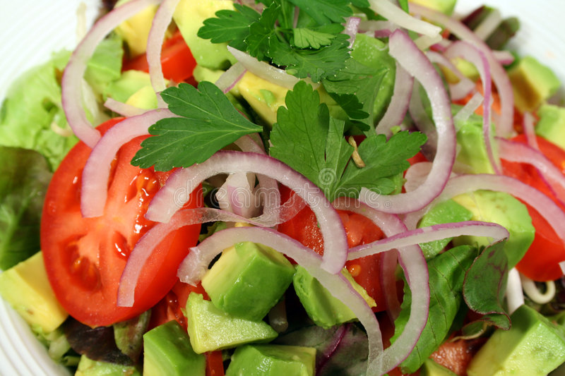

Tossed Salad Recipe

Description
Tossed salad is a happy and heathly lunch or dinner idea.
It is easy to make and even easier to enjoy.
Ingredients
- Lettuce
- Tomato
- Cucumber
- Carrot
- Sweet Pepper
- Red Onion
- Itailian Seasoning Mix
- Vinegar
- Oil
Steps
- Wash all veggies
- Chop all veggies into bit size pieces
- Place all chopped veggies into bowl which is
slightly too large
- Sprinkle some Itailian Seasoning, vinegar,and oil
on the top of the salad
- Break out the salad tongs and go crazy tossing the
salad as high as you can go.
- Either eat straight from the bowl or serve in smaller
bowl(s). Enjoy!